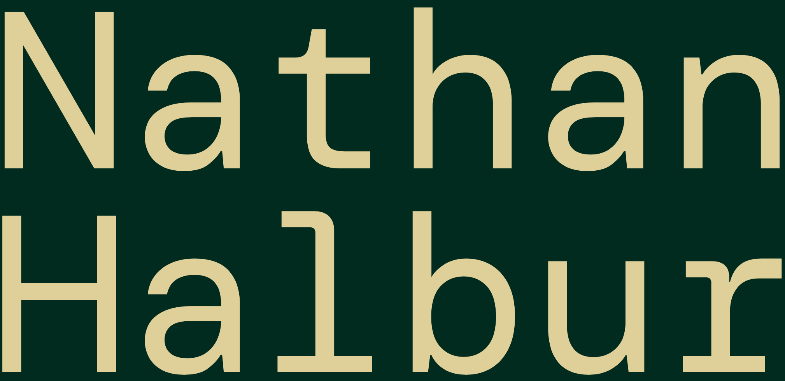

Insert a short bio here. Don't bother with a long one at all.
Some audio of my solo singing:
A studio recording of "Santa Baby" arranged & produced by me:
A music video featuring my arrangement of "Honeybee" by Steam Powered Giraffe:
A live concert recording by Camerata California of an original work for chorus & orchestra:
A 15-track mixtape of classical works reimagined in contemporary styles from my band DREAMGLOW with soprano Angela Yam:
Send me email at:
Follow me on social media at: